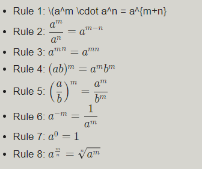

xn = ?
Result of Exponent Calculator
Result : {{exponent | number}}
steps :
{{value}} {{exponentValue }} = {{exponent | number}}
{{value}} {{exponentValue }} = {{value }}
= {{exponent | number}}
Learn About Exponent calculator
Any integer and any exponent may be entered easily into the exponent calculator to generate the answer. Just type in any number, followed by any other number, then click the calculate button! The simplest explanation of an exponent is that it indicates how many times the huge number should be multiplied by itself. An exponent is the little raised number to the right of another integer.
Let's face it, there are times when the best exponent calculator is one that is simple to use and doesn't even require us to understand the exponent formula! However, please refer to the "Formula" box above if you want to know the precise formula for computing exponent.
Exponents are a frequent concept in algebra and naturally occur in many situations. Exponents are simple to deal with in the presence of certain structures. Multiplications and the same base are necessary for simplifications to be simple, but they are not the sole prerequisites.
These are the major exponent principles that will help you simplify equations; we might make a list shorter.
There are some rules in that list that are redundant, and we could derive them from a smaller set of rules, but that is not our primary objective at this time.
It may appear that I am not responding to your question, but the solution is to follow the guidelines mentioned above. There is no one right technique to approach exponential equations; the only guidelines are to follow the order of operations and to start with simplifying straightforward concepts.
Then, due to the structure of what you have, you may collapse exponentiated terms based on whether they share a base, an exponent, or any other structure that can apply the aforementioned criteria.
Exponentiation is used in fields such as economics (compound interest, for instance), biology (population growth), chemistry, physics, and, of course, computer science, where storage capacity units are typically based on powers of two. Public-key cryptographic functions also depend on exponentiation's hard reversibility. These professionals frequently end up using a calculator.
There is exponential decay in physics for light, sound, gravity, toxic substances, and radiation (see radioactive decay & half-life). We speak about exponentially growing reach when it comes to marketing and the propagation of memes, viral videos, and other concepts. Moore's law, which describes how computer power will rise, is essentially an exponential law.
The scale for measuring Earthquakes is also exponential, so a magnitude 5 earthquake is 32 times stronger than a magnitude 4 earthquake (101.5), while a magnitude 6 earthquake releases 1,000 times more energy (103) than a 4. A 30 dB sound level is 10 times louder than a 20 dB sound level because the decibel scale, which is used to measure loudness, is also exponential: 20 dB = 102 dB = 100 power ratio, whereas 30 dB = 103 = 1,000 power ratio.
In the graph above, each exponent can be compared to a generation (in biology), a group of individuals who have watched a popular video or article on the internet (in marketing), or the energy released during an earthquake with a corresponding magnitude. We had to zoom in because, as you can see in step 10, an exponential process with a base of 2 is drastically dwarfed by one with a base of 3, to the point where the base 2 line almost appears flat next to the base 3 exponential curve. We created the graph using our online tool.
Exponential processes frequently come before catastrophic occurrences like ruptures and explosions in complicated systems. According to research frequently referenced by the renowned psychometrician Jordan B. Peterson, the distribution of income, intelligence, and ability in humans and other species is exponential. It is referred to as the Paretian distribution in the human studies community (Pareto distribution).
According to Didier Sornette & colleagues, financial crises, economic crises, and bubbles have an exponential character before they burst. Using power law (Zipf's Law), which approximates an exponential function, the size of cities may be accurately predicted.
The exponent is another name for the index or power in mathematics. According to the exponent values, the base number must be multiplied a certain amount of times. The exponent value is often placed on the right side, above the base number.
Verify the laws of exponents as well.
For instance, 42
In this case, the exponent is 2, while the base number is 4.
It denotes a two-fold multiplication of the number 4.
= 4 × 4 = 16
42 thus equals 16.
The most crucial principle in multiplying exponents is that the exponent value can be added if two base numbers are the same.
Exponents multiplied by the same base
Have the bases of the exponents you wish to multiply the same ones? You're lucky! The simplest scenario for multiplying exponents is this one! You merely need to keep in mind to multiply the exponents together. The example that follows will demonstrate how to carry it out.
Ex. 1: Let's resolve 711 * 7-9
We can see that the exponents are 11 and -9, and the bases are both equal to 7. We add the two exponents and use the product of powers rule:
711 * 7-9 = 711 + (-9) = 72
So, we get:
711 * 7-9 = 7 * 7 = 49
Your work becomes somewhat more challenging if the bases are varied, but you can do it! Let's talk about two instances where you may learn to multiply exponents with various bases.
Example 2: Calculate 54 * 24
As we can see, the bases are 5 and 2, yet the exponents are identical and equal to 4. As a result, we may multiply the bases together using the power of a product rule:
54 * 24 = (5 * 2)4 = 104
Remember that multiplying by any power of ten is as easy as writing the exponent's number of zeros after the leading. It's four zeros in this instance:
54 * 24 = 104 = 1000
What should you do when the bases and exponents are different as well? There is no easy solution, unlike the two specific examples we've explored thus far.
The best you can do is to use the three principles listed above coupled with the prime factorization of both bases to simplify the issue. For further information, see the prime factorization calculator. Prime factorization is the process of representing a number as the sum of prime numbers raised to the appropriate powers. For instance, 24 has the following prime factorization:
24 = 2 * 2 * 2 * 3 = 23 * 3
Exponents are a common occurrence in algebraic expressions, so being able to manage them and, primarily, minimize those exponents where it's possible, can prove to be a highly useful ability.
Always remember to begin with the simpler components of the expressions, try to arrange things using the aforementioned method, and hunt for simpler intermediate components.